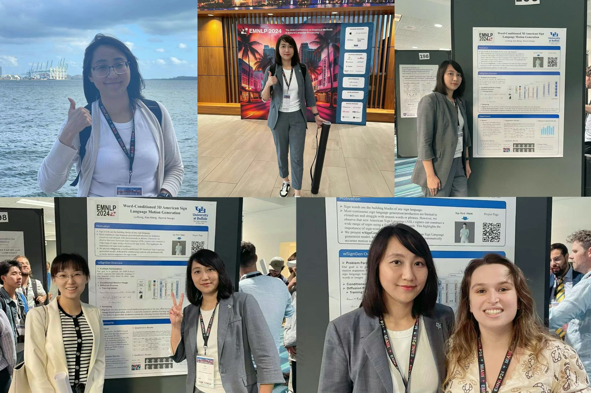
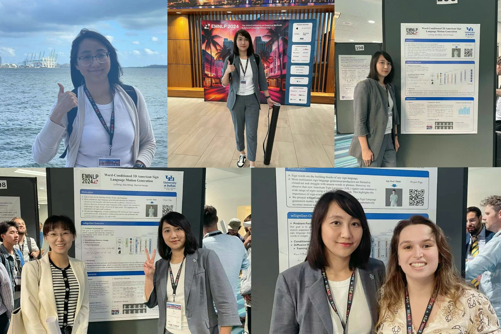
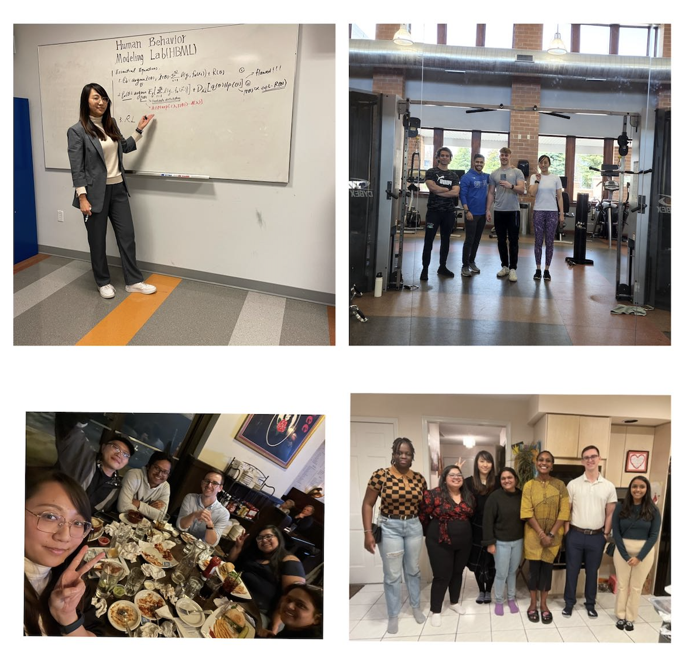
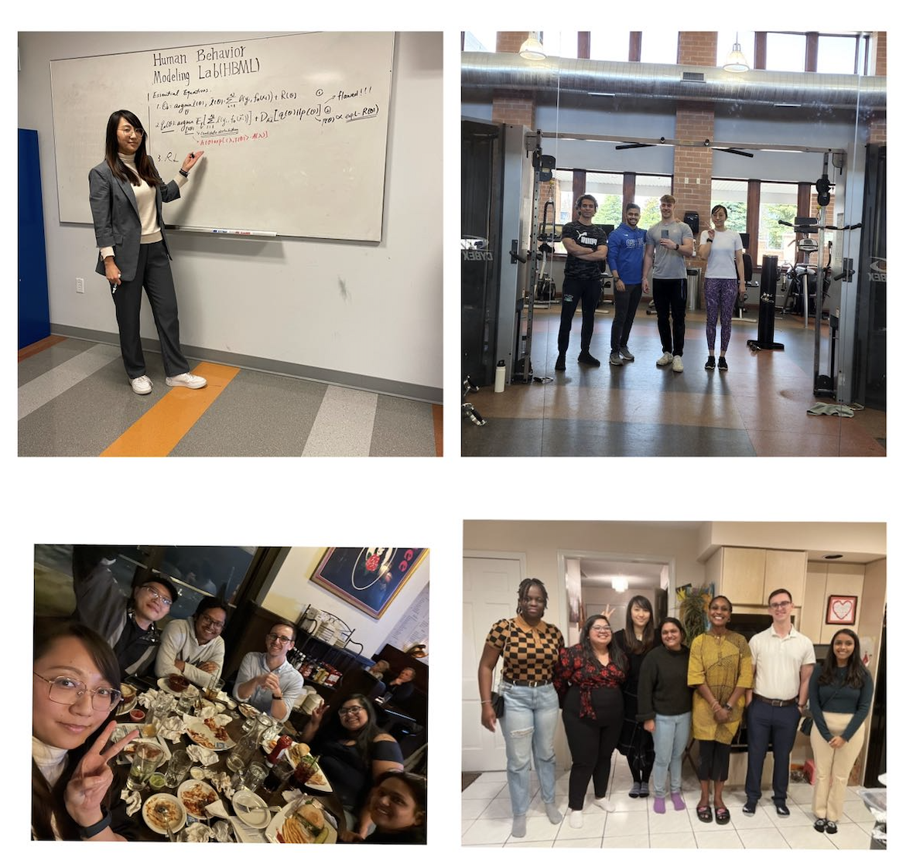

Lu Dong (董璐)Ph.D. Student
Department of Computer Science and Engineering |
 |
About Me
I'm a final-year Ph.D. studentat the Department of Computer Science and Engineering (CSE), University at Buffalo-The State University of New York (UB) , working with Prof. Ifeoma Nwogu at the Human Behavior Modeling Lab. Prior to my Ph.D. studies, I obtained a Master's degree in Computer Science and Technology from the School of Computer Science and Technology at Xi'an Jiaotong University (XJTU) in China, where I was advised by Prof. Xinyu Yang at the YLab .
My research focuses on generative AI, 3D human modeling, and agentic intelligence— specifically advancing human-centered video generation and interactive 3D digital humans endowed with domain expertise and empathetic social intelligence. My work spans large language models (LLMs), 3D vision, generative models, and multimodal foundation models. Key projects include sign-language generation, multi-person interaction, human–scene interaction, and human–robot collaboration. Previously, I gained experience in reinforcement learning, recommendation systems, and data visualization. I am now seeking full-time roles as a Research Scientist or Postdoctoral Researcher to continue advancing my research.
News [ ]
]
|
Selected Research
Lu Dong*, Xiao Wang*, Sahana Rangasrinivasan, Ifeoma Nwogu, Srirangaraj Setlur, Venu Govindaraju. (*Equal contribution)
International Conference on Intelligent Robots and Systems [IROS2025]
DOI PDF BibTeX Project Webpage
Lu Dong, Xiao Wang, Ifeoma Nwogu.
In Findings of the Association for Computational Linguistics [EMNLP 2024]
DOI PDF BibTeX Project Webpage
Lu Dong*, Xiao Wang*, Srirangaraj Setlur, Venu Govindaraju, Ifeoma Nwogu.
The 18th European Conference on Computer Vision [ECCV 2024] Workshop
DOI PDF BibTeX Project Webpage
Lu Dong, Lipisha Chaudhary, Fei Xu, Xiao Wang, Mason Lary, Ifeoma Nwogu.
The 18th IEEE International Conference on Automatic Face and Gesture Recognition [FG 2024].
DOI PDF BibTeX Project Webpage
Mengyi Shan, Lu Dong, Yutao Han, Yuan Yao, Tao Liu, Ifeoma Nwogu, Guo-Jun Qi, Mitch Hill.
The 18th European Conference on Computer Vision [ECCV 2024]
DOI PDF BibTeX Project Webpage
FeiXu, Lipisha Chaudhary, Lu Dong, Srirangaraj Setlur, Venu Govindaraju, Ifeoma Nwogu.
The 18th IEEE International Conference on Automatic Face and Gesture Recognition [FG 2024] Workshop.
DOI PDF BibTeX
Yuanhao Zhai, Mingzhen Huang, Tianyu Luan, Lu Dong , Ifeoma Nwogu, Siwei Lyu, David Doermann, Junsong Yuan
ACM Multimedia [MM 2023].
Please check title link for more details.
DOI PDF BibTeX Project Webpage
Previous
Juan Li, Lu Dong, Jianhang Ding, Xinyu Yang
12th Sound and Music Computing Conference(SMC)
DOI PDF BibTeX Project Webpage
Selected Project
The majority of current models have been trained on limited close set data, which often results in subpar performance when applied to real-world video data. One of the major challenges in this context is the issue of self-occlusion, which refers to instances where parts of a subject's body obstruct or cover other parts. This results in a less smooth and precise performance. This project aims to tackle this issue.
Please check title link for more details.
This project is undertaken in providing for support for a non-profit organization with the aim of addressing the lack of medical knowledge in underdeveloped regions of India. This shortfall leads to an alarming number of preventable fatalities each year. We have developed a training chatbot to enhance the understanding of medical knowledge and local resources by volunteers and the local population. The chatbot will serve as an educational tool to improve medical literacy and ultimately, save lives.
Please check title link for more details.
Do authoritative figures have any influence on the trend of COVID-19, what is the attitude of the general public toward COVID-19 and vaccines, whether changes in public attitudes are influenced by authoritative speech? The aim of this project is to design and develop a full-stack search engine that integrates advanced functionalities for retrieval, translation, sentiment analysis, attitude tracking, topic & area statistics, and disinformation detection from multiple dimensions.
Please check title link for more details.
Experience
Research Assistant
- Research Assistant, National AI Institute for Exceptional Education, University at Buffalo, SUNY (UB), Sep 2023 – Present
- Research Assistant, Human Behavior Modeling Lab, University at Buffalo, SUNY (UB), Aug 2021 – Present
- Research Assistant, Rochester Institute of Technology (RIT), Aug 2020 – May 2021
- Research Assistant, Xi’an Jiaotong University (XJTU), Aug 2013 – May 2016
Research Internship
- Research Intern, NEC Laboratories America, Inc., On-Site, May 2025 – Present
- Research Intern, InnoPeak Technology, Seattle, WA, On-Site, June 2023 – Aug 2023
- Research Intern, InnoPeak Technology, Palo Alto, CA, On-Site, May 2022 – Aug 2022
Selected Awards & Honors
- Best AI Project , UB 2024.
- IJCB Conference Leadership Award , 2024.
- ECCV Conference Travel Grant , 2024.
- National Graduate Academic Scholarship , 2013-2016.
- National Endeavor Undergraduate Scholarship for Outstanding Students , 2010-2011
- Excellent Graduate Student Honor, 2014-2016 ; Excellent Undergraduate Student Honor, 2010-2011.
- Silver Medal in Women’s 100m Hurdles, Shaanxi Provincial University Games, 2014.
- Champion Team in Women’s Basketball (Captain) First-time achievement for the CS Department, 2010.
Academic Services
Conference Organization & Reviewer
- 2024.09 Served as the Local Student Chair for IJCB 2024 Conference @ Buffalo, NY.
- ACL Rolling Review (ARR), February & July 2025; (Association for Computational Linguistics)
- ICCV 2025 (International Conference on Computer Vision)
- IEEE CAI 2025 (IEEE Conference on Artificial Intelligence)
- ACM MM 2022, 2023, 2024 (ACM International Conference on Multimedia)
Journal Reviewer
- Computer Vision and Image Understanding (CVIU), 2025
- Springer Nature: Machine Vision and Applications (SN MVA), 2024
- IEEE Transactions on Affective Computing (IEEE TAFFC), 2024
Invited Talks & Competition Judge/Reviewer
- 2025.03: I was invited to give a talk on AI for Human Behavior at Women in Tech Western New York.
- 2024.10: I was invited as a speaker for a panel discussion on 'AI Research and Career Development' at UB.
- 2023.8: I was invited to give a talk on Internships in the course CSE501, Fall2023, UB.
- 2022.11.06 Invited as a Judge for 2022 UB Hacking Competition.
- 2022.10: Delivering a talk, introducing Human Pose Estimation and Ph.D Life Guidance in the course CSE-501, Fall2022.
Membership
- ACL Member; IEEE Student Member; IEEE Biometrics Council Member
Selected Photos

 



 

|
Last Updated on December, 2024
|